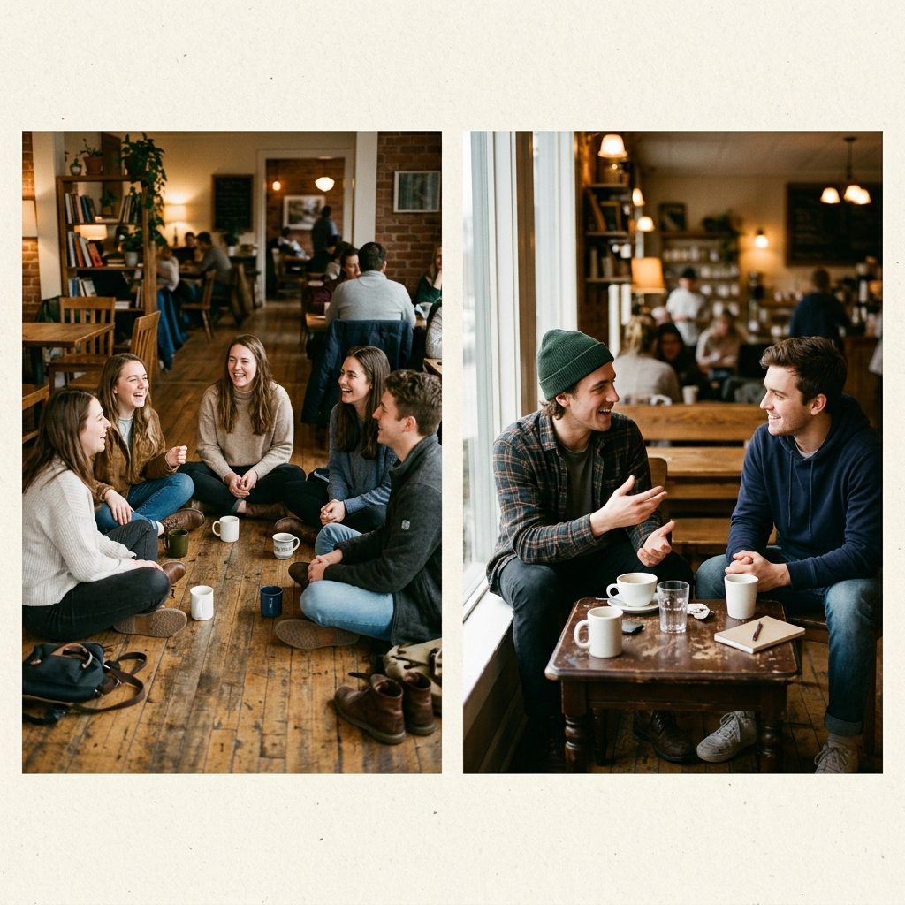

BERTETANGGA BAIK
LAHIR KARENA MIMPI, BESAR KARENA TETANGGA
1. SENYUM, SAPA, SALAM
Budaya dari seluruh lapisan struktur keluarga TUKU. Sebuah upaya untuk mengenal, memahami, dan mendengarkan tetangga.
2. KUMPUL TETANGGA TUKU
Berkegiatan bersama tetangga. Kadang untuk perayaan, kadang hanya untuk bersenda-gurau, yang penting bisa berkumpul.
3. KARTU RUKUN TETANGGA
Kalau negara punya TKR, TUKU punya KaRT. Sebuah tanda eratnya pertetanggaan. Belajar bersama, membuat gerakan bersama juga.
ARTIKEL BERTETANGGA BAIK
BAGI RAPOT DI TUKU JOGJA
Informasi SelengkapnyaBAGRAG TARTUK: BERBAGI TAKJIL DI BULAN RAMADAN
Informasi Selengkapnya